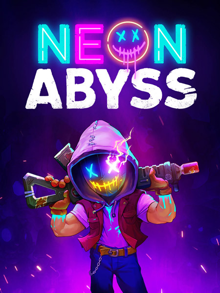
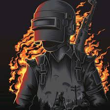
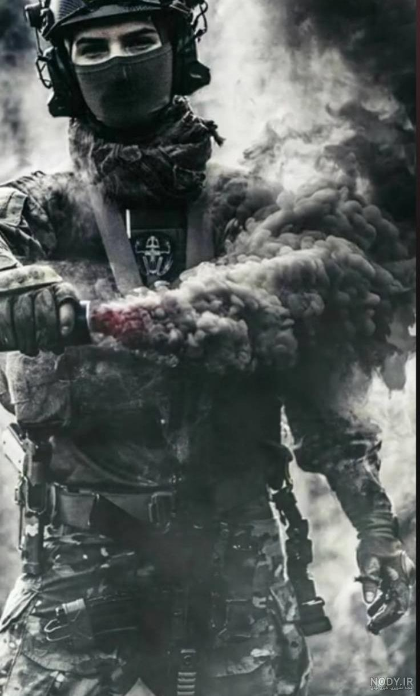
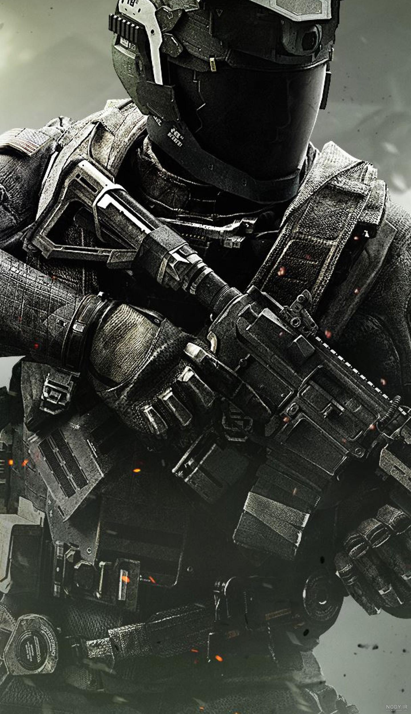
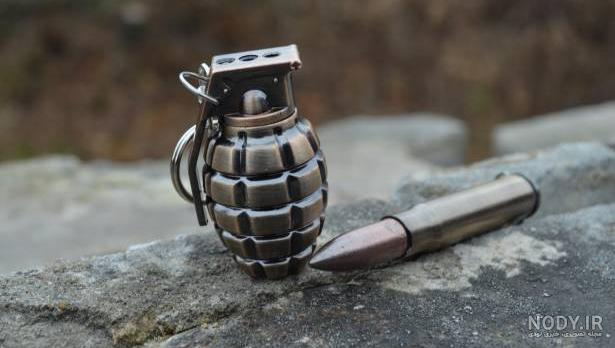
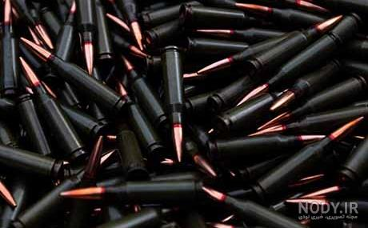
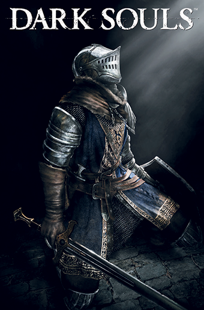

God_of_war

توضیحات بازی:خدای جنگ (به انگلیسی: God of War) یک فرنچایز چندرسانهای بازی ویدئویی مبنی بر اسطورهشناسی به سبک اکشن-ماجراجویی است که توسط دیوید جفی در استودیو سنتا مونیکا سونی خلق شدهاست. این مجموعه با انتشار نخستین قسمت خود در سال ۲۰۰۵ برای کنسول پلیاستیشن ۲ آغاز شد و از آن زمان به بعد تبدیل به یک عنوان پرچمدار برای برند پلیاستیشن شدهاست. داستان بازی درباهٔ کریتوس، جنگجوی اسپارت است که با فریب آرس، خدای جنگ یونانیان و مربی سابقش، دست به کشتن همسر و دخترش میزند. کریتوس برای رهایی خود از عذاب و کابوسها به خدمت المپ نشینان در میآید. اما چیزی نمیگذرد که به دلیل توطئههای آنها، خود را درگیر مقابله با المپ نشینان مییابد. سالها پس از نابودی یونان باستان، کریتوس همراه با پسر جوانش آتریوس به نورس میرسد. این دو سفر خود را در چندین قلمرو اساطیر اسکاندیناوی آغاز میکنند تا به قولی که به مادر مرحوم پسرش دادهاست وفا کند.[۱]
rank: 8/10
Doctor.sleep.2023

توضیحات فیلم: دکتر اسلیپ (به انگلیسی: Doctor Sleep)، یک فیلم آمریکایی در ژانر فانتزی تاریک ترسناک به نویسندگی و کارگردانی مایک فلناگان است که در سال ۲۰۱۹ اکران شد. فلناگان علاوه بر نویسندگی و کارگردانی فیلم، تدوینگر و یکی از تهیهکنندگان اجرایی فیلم نیز است.[۴] دکتر اسلیپ دنبالهای بر فیلم مشهور درخشش به کارگردانی استنلی کوبریک است[۵] و فیلمنامه آن بر اساس رمان دکتر اسلیپ که در سال ۲۰۱۳ توسط استیون کینگ نوشته شده، به رشته تحریر درآمده است.[۶] در این فیلم، یوان مکگرگور در نقش دنی تورنس ظاهر شدهاست. از دیگر بازیگران فیلم میتوان به ربکا فرگوسن، جیکوب ترمبلی، بروس گرینوود و امیلی آلین لیند اشاره کرد.[۷] کمپانی برادران وارنر برای مدت زیادی تلاش کرد تا اقتباس سینمایی از رمان دکتر اسلیپ را بسازد اما پروژه به خاطر تأمین نشدن بودجه مناسب چندین بار متوقف شد
rank: 5/10
Team17
توضیحات بازی:بازی Neon Abyss از آن دست عناوین عجیب و غریب است که ممکن است در نگاه اول تداعی کننده بازیهایی مانند Metal Slug و Enter the Gungeon باشد اما در عمل شبیه به هیچ بازی دیگری نیست. بازی Neon Abyss در ژانر شوتر Roguelike ساخته شده و سازندگان بازی در استودیوی Veewo Games قصد دارند این ژانر را با یک انقلاب مواجه سازند، حال سوال این است که موفق به ایجاد این انقلاب شدهاند؟ هم آره هم نه: داستان بازی از جایی آغاز میشود که گیمرها به عنوان یکی از اعضای Grimm Squad، توسط هادث (Hades) مامور میشوند تا به نبرد چندین خدا و الهه بروند که بنای شورش و سرکشی گذاشتهاند. این خدایان وظایف مختلفی از جمله کنترل رسانههای جمعی تا بازیهای آنلاین را برعهده دارند، برهمین اساس سرکوب و سربه راه کردن دوبارهی این خدایان یک امر حیاتی است که واکنشی سریع میطلبد. سطح دیوانگی داستان بازی در همین چند خط توصیف کاملا مشخص است و برای تاکید بر آن نیازی به توضیح بیشتر نیست.
rank: 6/10
images
توضیحات بازی
rank: 10/10
call-of-
توضیحات بازی:ندای وظیفه: جنگاوری نوین (به انگلیسی: Call of Duty: Modern Warfare) یک بازی ویدئویی به سبک تیراندازی اول شخص است که توسط استودیوی اینفینیتی وارد ساخته شده و بهوسیلهٔ شرکت اکتیویژن در ۲۵ اکتبر ۲۰۱۹ برای پلتفرمهای مایکروسافت ویندوز، پلیاستیشن ۴ و ایکسباکس وان منتشر شد.[۱][۲][۳] این بازی پانزدهمین نسخه از مجموعه ندای وظیفه و چهارمین نسخه از سری جنگاوری نوین است که برخلاف روال گذشته ادامه نسخه پیشین نبوده و یک بازشروع برای این مجموعه بازی تلقی میشود. ندای وظیفه: جنگاوری نوین در یک فضای واقع بینانه و مدرن اتفاق میافتد. داستان بازی دربارهٔ یک افسر سیآیاِی به نام الکس و نیروهای اساِیاس است که یک محموله خطرناک گاز شیمیایی را به کشور خیالی اورزیکستان منتقل کنند. در مسیر این انتقال محموله گاز توسط افراد ناشناش دزدیده میشود و چالشهای بازی از آنجا شروع میشود. الکس به همراه تیم خود قصد بازگرداندن محموله و با همکاری با شورشیانی از اورزیکستان، جلو تهاجم نیروهای روسی به این کشور خیالی را بگیرند.[۴][۵][۶]
rank: 10/10
wasteland 3

توضیحات بازی:داستان بازی Wasteland 3 در ادامهی وقایع قسمت دوم این سری رخ میدهد. در این بازی شما کنترل دو تن از از رنجرهای صحرایی تیم نوامبر (Team November) را بر عهده میگیرید که به همراه گروه خود از صحرای داغ و سوزان آریزونا رهسپار ایالت سرد و برفی کلورادو میشوند تا رهبر محلی آنجا را در کنترل اوضاع آشفته کلورادو یاری دهند و در ازای انجام این کار آذوقه و منابعی که آریزونا شدیداً به آن نیاز دارد را تامین کنند. اما متاسفانه موقعیت گروه شما در میانهی راه لو میرود و تیم نوامبر با حملهای سنگین از طرف یکی از جناحهای دشمن به نام دورسیها غافلگیر میشود که اکثر همرزمان رنجر شما در آن قتلعام میشوند. wasteland 3 شما باید به هر نحوی شده از این تله جان سالم به در ببرید و خود را به رهبر گروه پیتریارک (Patriarch) برسانید. بعد از جنگی بیامان شما موفق میشوید که از منطقهی خطر بگریزید و بعد از دیدار با رهبر کلرادو دیدار کنید، او در ماموریتی که به شما محول میکند از شما میخواهد که قیام فرزندانش را که بر علیه او شورش کردهاند سرکوب کنید و هر طور شده به این نزاع پایان دهید. البته جنگ شما تنها با فرزندان پیتریارک نیست و این این مشاجره خانوادگی تنها گوشهای کوچکی از کل داستان است، چنانچه تمامی گروهها و جناحهای کلرادو مشکلات خود را دارند و تنها با کمک شما میتوانند آنها را حل و فصل کنند.
rank: 7/10
nody

توضیحات بازی
rank: 9/10
Gang
توضیحات بازی
rank: 8/10
BOMB
توضیحات عکس
rank: 3/10
Gololeh
توضیحات عکس
rank: 5/10
Dark-Souls
توضیحات بازی:
rank: 8/10